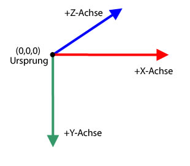

| Paket | flash.geom |
| Klasse | public class Vector3D |
| Vererbung | Vector3D |
| Sprachversion: | ActionScript 3.0 |
| Laufzeitversionen: | Flash Player 10, AIR 1.5 |
x-Eigenschaft die horizontale und die y-Eigenschaft die vertikale Achse dar. Die z-Eigenschaft stellt im dreidimensionalen Raum die Tiefe dar. Der Wert der x-Eigenschaft erhöht sich, wenn sich das Objekt nach rechts bewegt. Der Wert der y-Eigenschaft erhöht sich, wenn sich das Objekt nach unten bewegt. Der Wert der z-Eigenschaft erhöht sich, wenn sich das Objekt vom Blickpunkt wegbewegt. Durch perspektivische Projektion und Skalierung erscheint das Objekt größer, wenn es näher, und kleiner, wenn es weiter vom Bildschirm entfernt ist. Wie bei einem rechtsseitigen dreidimensionalen Koordinatensystem zeigt die positive z-Achse vom Betrachter weg und der Wert der z-Eigenschaft erhöht sich, wenn sich das Objekt vom Auge des Betrachters wegbewegt. Der Ursprungspunkt (0,0,0) des globalen Raums ist die linke obere Ecke der Bühne.

Die Vector3D-Klasse kann auch eine Richtung darstellen, einen Pfeil, der vom Ursprung der Koordinaten, z. B. (0,0,0) zu einem Endpunkt zeigt, oder eine Gleitkommakomponente eines RGB (Rot, Grün, Blau)-Farbmodells.
Die Quaternionschreibweise führt ein viertes Element ein, die w-Eigenschaft, die zusätzliche Ausrichtungsinformationen bereitstellt. Die w-Eigenschaft kann beispielsweise einen Drehwinkel eines Vector3D-Objekts bestimmen. Die Kombination aus Drehwinkel und den Koordinaten x, y, und z bestimmt die Ausrichtung des Anzeigeobjekts. Hier sehen Sie eine Darstellung eines Vector3D-Elements in Matrixschreibweise:

Verwandte API-Elemente
 Vererbte öffentliche Eigenschaften ausblenden
Vererbte öffentliche Eigenschaften ausblenden Vererbte öffentliche Eigenschaften anzeigen
Vererbte öffentliche Eigenschaften anzeigen| Eigenschaft | Definiert von | ||
|---|---|---|---|
 | constructor : Object
Ein Verweis auf das Klassenobjekt oder die Konstruktorfunktion für eine angegebene Objektinstanz. | Object | |
| length : Number [schreibgeschützt]
Die Länge, Ausdehnung des aktuellen Vector3D-Objekts vom Ursprung (0,0,0) zur x-, y-, und z-Koordinate des Objekts. | Vector3D | ||
| lengthSquared : Number [schreibgeschützt]
Das Quadrat der Länge des aktuellen Vector3D-Objekts, berechnet mithilfe der x-, y- und z-Eigenschaften. | Vector3D | ||
| w : Number
Das vierte Element eines Vector3D-Objekts (zusätzlich zu den x-, y- und z-Eigenschaften) kann Daten wie zum Beispiel den Drehwinkel enthalten. | Vector3D | ||
| x : Number
Das erste Element eines Vector3D-Objekts, beispielsweise die x-Koordinate eines Punkts im dreidimensionalen Raum. | Vector3D | ||
| y : Number
Das zweite Element eines Vector3D-Objekts, beispielsweise die y-Koordinate eines Punkts im dreidimensionalen Raum. | Vector3D | ||
| z : Number
Das dritte Element eines Vector3D-Objekts, beispielsweise die z-Koordinate eines Punkts im dreidimensionalen Raum. | Vector3D | ||
| Methode | Definiert von | ||
|---|---|---|---|
Erstellt eine Instanz eines Vector3D-Objekts. | Vector3D | ||
Addiert den Wert des x-, y- und z-Elements des aktuellen Vector3D-Objekts zum Wert des x-, y- und z-Elements eines anderen Vector3D-Objekts. | Vector3D | ||
[statisch]
Gibt den Wert im Bogenmaß (in Radiant) zwischen zwei Vektoren zurück. | Vector3D | ||
Gibt ein neues Vector3D-Objekt zurück, das eine genaue Kopie des aktuellen Vector3D-Objekts ist. | Vector3D | ||
Kopiert alle Vektordaten aus dem Vector3D-Quellobjekt in das aufrufende Vector3D-Objekt. | Vector3D | ||
Gibt ein neues Vector3D-Objekt zurück, das senkrecht (im rechten Winkel) zum aktuellen und einem weiteren Vector3D-Objekt steht. | Vector3D | ||
Dekrementiert den Wert des x-, y- und z-Elements des aktuellen Vector3D-Objekts um den Wert des x-, y- und z-Elements des angegebenen Vector3D-Objekts. | Vector3D | ||
[statisch]
Gibt die Entfernung zwischen zwei Vector3D-Objekten zurück. | Vector3D | ||
Wenn es sich beim aktuellen und bei dem als Parameter angegebenen Vector3D-Objekt um Einheitsscheitelpunkte handelt, gibt diese Methode den Kosinus des Winkels zwischen den beiden Scheitelpunkten zurück. | Vector3D | ||
Ermittelt, ob zwei Vector3D-Objekte gleich sind, indem das x-, y- und z-Element des aktuellen Vector3D-Objekts mit einem angegebenen Vector3D-Objekt verglichen werden. | Vector3D | ||
|
Gibt an, ob für ein Objekt eine bestimmte Eigenschaft definiert wurde. | Object | |
Inkrementiert den Wert des x-, y- und z-Elements des aktuellen Vector3D-Objekts um den Wert des x-, y- und z-Elements des angegebenen Vector3D-Objekts. | Vector3D | ||
|
Gibt an, ob eine Instanz der Object-Klasse in der Prototypkette des Objekts vorhanden ist, das als Parameter angegeben wurde. | Object | |
Vergleicht die Elemente des aktuellen Vector3D-Objekts mit den Elementen eines angegebenen Vector3D-Objekts, um festzustellen, ob sie annähernd gleich sind. | Vector3D | ||
Stellt das aktuelle Vector3D-Objekt auf den inversen Wert ein. | Vector3D | ||
Konvertiert ein Vector3D-Objekt in einen Einheitsvektor, indem die ersten drei Elemente (x, y, z) durch die Länge des Vektors dividiert werden. | Vector3D | ||
Dividiert den Wert der x-, y- und z-Eigenschaft des aktuellen Vector3D-Objekts durch den Wert der w-Eigenschaft. | Vector3D | ||
|
Gibt an, ob die angegebene Eigenschaft vorhanden ist und durchlaufen werden kann. | Object | |
Skaliert das aktuelle Vector3D-Objekt um einen Skalar, eine Größe. | Vector3D | ||
|
Legt die Verfügbarkeit einer dynamischen Eigenschaft für Schleifenoperationen fest. | Object | |
Legt die Mitglieder des Vector3D-Objekts auf die angegebenen Werte fest
| Vector3D | ||
Subtrahiert den Wert des x-, y- und z-Elements des aktuellen Vector3D-Objekts vom x-, y- und z-Element eines anderen Vector3D-Objekts. | Vector3D | ||
|
Gibt die Stringdarstellung dieses Objekts zurück, formatiert entsprechend den Konventionen des Gebietsschemas. | Object | |
Gibt das aktuelle Vector3D-Objekt als String zurück. | Vector3D | ||
|
Gibt den Grundwert des angegebenen Objekts zurück. | Object | |
| Konstante | Definiert von | ||
|---|---|---|---|
| X_AXIS : Vector3D [statisch]
Die x-Achse, definiert als Vector3D-Objekt mit Koordinaten (1,0,0). | Vector3D | ||
| Y_AXIS : Vector3D [statisch]
Die y-Achse, definiert als Vector3D-Objekt mit Koordinaten (0,1,0). | Vector3D | ||
| Z_AXIS : Vector3D [statisch]
Die z-Achse, definiert als Vector3D-Objekt mit Koordinaten (0,0,1). | Vector3D | ||
length | Eigenschaft |
length:Number [schreibgeschützt] | Sprachversion: | ActionScript 3.0 |
| Laufzeitversionen: | Flash Player 10, AIR 1.5 |
Die Länge, Ausdehnung des aktuellen Vector3D-Objekts vom Ursprung (0,0,0) zur x-, y-, und z-Koordinate des Objekts. Die w-Eigenschaft wird nicht berücksichtigt. Ein Einheitsvektor hat eine Länge bzw. Ausdehnung von eins.
Implementierung
public function get length():NumberVerwandte API-Elemente
lengthSquared | Eigenschaft |
lengthSquared:Number [schreibgeschützt] | Sprachversion: | ActionScript 3.0 |
| Laufzeitversionen: | Flash Player 10, AIR 1.5 |
Das Quadrat der Länge des aktuellen Vector3D-Objekts, berechnet mithilfe der x-, y- und z-Eigenschaften. Die w-Eigenschaft wird nicht berücksichtigt. Verwenden Sie nach Möglichkeit die lengthSquared()-Methode anstelle des langsameren Math.sqrt()-Methodenaufrufs der Vector3D.length()-Methode.
Implementierung
public function get lengthSquared():NumberVerwandte API-Elemente
w | Eigenschaft |
public var w:Number| Sprachversion: | ActionScript 3.0 |
| Laufzeitversionen: | Flash Player 10, AIR 1.5 |
Das vierte Element eines Vector3D-Objekts (zusätzlich zu den x-, y- und z-Eigenschaften) kann Daten wie zum Beispiel den Drehwinkel enthalten. Der Standardwert ist 0.
Die Quaternionschreibweise verwendet einen Winkel als viertes Element bei der Berechnung der dreidimensionalen Drehung. Mit der w-Eigenschaft kann der Drehwinkel um das Vector3D-Objekt definiert werden. Die Kombination des Drehwinkels und der Koordinaten (x,y,z) bestimmt die Ausrichtung des Anzeigeobjekts.
Zusätzlich kann die w-Eigenschaft als perspektivischer Verzerrungsfaktor für eine projizierte dreidimensionale Position oder als ein Projektionstransformationswert bei der Darstellung einer dreidimensionalen Koordinate, die in den zweidimensionalen Raum projiziert wird, verwendet werden. Sie können zum Beispiel eine Projektionsmatrix mit der Matrix3D.rawData-Eigenschaft erstellen, die bei Anwendung auf ein Vector3D-Objekt einen Transformationswert im vierten Element des Vector3D-Objekts (der w-Eigenschaft) erzeugt. Das Dividieren der anderen Elemente des Vector3D-Objekts durch den Transformationswert erzeugt dann ein projiziertes Vector3D-Objekt. Mit der Vector3D.project()-Methode können Sie die ersten drei Elemente eines Vector3D-Objekts durch sein viertes Element dividieren.
Verwandte API-Elemente
x | Eigenschaft |
public var x:Number| Sprachversion: | ActionScript 3.0 |
| Laufzeitversionen: | Flash Player 10, AIR 1.5 |
Das erste Element eines Vector3D-Objekts, beispielsweise die x-Koordinate eines Punkts im dreidimensionalen Raum. Der Standardwert ist 0.
y | Eigenschaft |
public var y:Number| Sprachversion: | ActionScript 3.0 |
| Laufzeitversionen: | Flash Player 10, AIR 1.5 |
Das zweite Element eines Vector3D-Objekts, beispielsweise die y-Koordinate eines Punkts im dreidimensionalen Raum. Der Standardwert ist 0.
z | Eigenschaft |
public var z:Number| Sprachversion: | ActionScript 3.0 |
| Laufzeitversionen: | Flash Player 10, AIR 1.5 |
Das dritte Element eines Vector3D-Objekts, beispielsweise die z-Koordinate eines Punkts im dreidimensionalen Raum. Der Standardwert ist 0.
Vector3D | () | Konstruktor |
public function Vector3D(x:Number = 0., y:Number = 0., z:Number = 0., w:Number = 0.)| Sprachversion: | ActionScript 3.0 |
| Laufzeitversionen: | Flash Player 10, AIR 1.5 |
Erstellt eine Instanz eines Vector3D-Objekts. Wenn Sie keinen Parameter für den Konstruktor festlegen, wird ein Vector3D-Objekt mit den Elementen (0,0,0,0) erstellt.
Parameterx:Number (default = 0.) | |
y:Number (default = 0.) | |
z:Number (default = 0.) | |
w:Number (default = 0.) |
add | () | Methode |
public function add(a:Vector3D):Vector3D| Sprachversion: | ActionScript 3.0 |
| Laufzeitversionen: | Flash Player 10, AIR 1.5 |
Addiert den Wert des x-, y- und z-Elements des aktuellen Vector3D-Objekts zum Wert des x-, y- und z-Elements eines anderen Vector3D-Objekts. Die add()-Methode verändert das aktuelle Vector3D-Objekt nicht. Stattdessen gibt es ein neues Vector3D-Objekt mit den neuen Werten zurück.
Werden zwei Vektoren addiert, so ist das Ergebnis ein Ergebnisvektor. Die Visualisierung des Ergebnisses kann erfolgen, indem ein Vektor vom Ausgangs- oder Startpunkt des ersten Vektors zur Spitze bzw. zum Endpunkt des zweiten Vektors gezeichnet wird. Der Ergebnisvektor ist die Entfernung zwischen dem Ausgangspunkt des ersten und dem Endpunkt des zweiten Vektors.

Parameter
a:Vector3D — Das Vector3D-Objekt, das zum aktuellen Vector3D-Objekt addiert wird.
|
Vector3D — Ein Vector3D-Objekt, das das Ergebnis der Addition des aktuellen Vector3D-Objekts zu einem anderen Vector3D-Objekt ist.
|
Verwandte API-Elemente
angleBetween | () | Methode |
public static function angleBetween(a:Vector3D, b:Vector3D):Number| Sprachversion: | ActionScript 3.0 |
| Laufzeitversionen: | Flash Player 10, AIR 1.5 |
Gibt den Wert im Bogenmaß (in Radiant) zwischen zwei Vektoren zurück. Der zurückgegebene Winkel ist das kleinste Bogenmaß (in Radiant), um den das erste Vector3D-Objekt gedreht wird, bis es mit dem zweiten Vector3D-Objekt zusammenfällt.
Die angleBetween()-Methode ist eine statische Methode. Sie können sie direkt als Methode der Vector3D-Klasse verwenden.
Für die Umrechnung zwischen Grad und Radiant verwenden Sie die folgende Formel:
Radiant = Math.PI/180 * Grad
Parameter
a:Vector3D — Das erste Vector3D-Objekt.
| |
b:Vector3D — Das zweite Vector3D-Objekt.
|
Number — Der Winkel zwischen zwei Vector3D-Objekten.
|
clone | () | Methode |
public function clone():Vector3D| Sprachversion: | ActionScript 3.0 |
| Laufzeitversionen: | Flash Player 10, AIR 1.5 |
Gibt ein neues Vector3D-Objekt zurück, das eine genaue Kopie des aktuellen Vector3D-Objekts ist.
RückgabewerteVector3D — Ein neues Vector3D-Objekt, das eine Kopie des aktuellen Vector3D-Objekts ist.
|
copyFrom | () | Methode |
public function copyFrom(sourceVector3D:Vector3D):void| Sprachversion: | ActionScript 3.0 |
| Laufzeitversionen: | Flash Player 11, AIR 3.0, Flash Lite 4 |
Kopiert alle Vektordaten aus dem Vector3D-Quellobjekt in das aufrufende Vector3D-Objekt.
Parameter
sourceVector3D:Vector3D — Das Vector3D-Objekt, aus dem die Daten kopiert werden.
|
crossProduct | () | Methode |
public function crossProduct(a:Vector3D):Vector3D| Sprachversion: | ActionScript 3.0 |
| Laufzeitversionen: | Flash Player 10, AIR 1.5 |
Gibt ein neues Vector3D-Objekt zurück, das senkrecht (im rechten Winkel) zum aktuellen und einem weiteren Vector3D-Objekt steht. Wenn die Koordinaten des zurückgegebenen Vector3D-Objekts (0,0,0) sind, sind die beiden Vector3D-Objekte parallel zueinander.

Sie können das normalisierte Kreuzprodukt zweier Scheitelpunkte einer Polygonoberfläche mit dem normalisierten Vektor des Kamera- oder Betrachterblickpunkts verwenden, um ein Punktprodukt zu erhalten. Der Wert des Punktprodukts gibt an, ob eine Oberfläche eines dreidimensionalen Objekts vom Blickpunkt aus verborgen ist.
Parameter
a:Vector3D — Ein zweites Vector3D-Objekt.
|
Vector3D — Ein neues Vector3D-Objekt, das senkrecht (im rechten Winkel) zum aktuellen und dem als Parameter angegebenen Vector3D-Objekt steht.
|
Verwandte API-Elemente
decrementBy | () | Methode |
public function decrementBy(a:Vector3D):void| Sprachversion: | ActionScript 3.0 |
| Laufzeitversionen: | Flash Player 10, AIR 1.5 |
Dekrementiert den Wert des x-, y- und z-Elements des aktuellen Vector3D-Objekts um den Wert des x-, y- und z-Elements des angegebenen Vector3D-Objekts. Anders als die Vector3D.subtract()-Methode ändert die decrementBy()-Methode das aktuelle Vector3D-Objekt und gibt kein neues Vector3D-Objekt zurück.
Parameter
a:Vector3D — Das Vector3D-Objekt, das die Werte enthält, die vom aktuellen Vector3D-Objekt subtrahiert werden.
|
Verwandte API-Elemente
distance | () | Methode |
public static function distance(pt1:Vector3D, pt2:Vector3D):Number| Sprachversion: | ActionScript 3.0 |
| Laufzeitversionen: | Flash Player 10, AIR 1.5 |
Gibt die Entfernung zwischen zwei Vector3D-Objekten zurück. Die distance()-Methode ist eine statische Methode. Sie können sie direkt als Methode der Vector3D-Klasse verwenden, um den euklidischen Abstand zwischen zwei dreidimensionalen Punkten zu erhalten.
Parameter
pt1:Vector3D — Ein Vector3D-Objekt als erster dreidimensionaler Punkt.
| |
pt2:Vector3D — Ein Vector3D-Objekt als zweiter dreidimensionaler Punkt.
|
Number — Die Entfernung zwischen zwei Vector3D-Objekten.
|
dotProduct | () | Methode |
public function dotProduct(a:Vector3D):Number| Sprachversion: | ActionScript 3.0 |
| Laufzeitversionen: | Flash Player 10, AIR 1.5 |
Wenn es sich beim aktuellen Vector3D-Objekt und bei dem als Parameter angegebenen um Einheitsscheitelpunkte handelt, gibt diese Methode den Kosinus des Winkels zwischen den beiden Scheitelpunkten zurück. Einheitsscheitelpunkte sind Scheitelpunkte, die in dieselbe Richtung zeigen, deren Länge jedoch eins ist. Sie entfernen die Länge des Vektors als Faktor im Ergebnis. Mit der normalize()-Methode können Sie einen Vektor in einen Einheitsvektor konvertieren.
Die dotProduct()-Methode sucht den Winkel zwischen zwei Scheitelpunkten. Sie wird auch beim Backface Culling oder bei Beleuchtungsberechnungen verwendet. Backface Culling (Verdeckungsberechnung) ist ein Verfahren zur Bestimmung, welche Oberflächen vom Blickpunkt aus verborgen sind. Sie können die normalisierten Scheitelpunkte vom Blickpunkt (Kamera oder Auge) und das Kreuzprodukt der Scheitelpunkte einer Polygonoberfläche verwenden, um das Punktprodukt zu berechnen. Wenn das Punktprodukt kleiner als null ist, zeigt die Oberfläche zur Kamera bzw. zum Betrachter. Wenn die beiden Einheitsscheitelpunkte im rechten Winkel zueinander stehen, sind sie orthogonal und das Punktprodukt ist null. Wenn die beiden Scheitelpunkte parallel zueinander liegen, ist das Punktprodukt eins.
Parameter
a:Vector3D — Das zweite Vector3D-Objekt.
|
Number — Ein Skalar, der das Punktprodukt des aktuellen Vector3D-Objekts und des angegebenen Vector3D-Objekts ist.
|
Verwandte API-Elemente
equals | () | Methode |
public function equals(toCompare:Vector3D, allFour:Boolean = false):Boolean| Sprachversion: | ActionScript 3.0 |
| Laufzeitversionen: | Flash Player 10, AIR 1.5 |
Ermittelt, ob zwei Vector3D-Objekte gleich sind, indem das x-, y- und z-Element des aktuellen Vector3D-Objekts mit einem angegebenen Vector3D-Objekt verglichen werden. Wenn die Werte dieser Elemente gleich sind, sind die beiden Vector3D-Objekte gleich. Wenn der zweite optionale Parameter auf true eingestellt ist, werden alle vier Elemente des Vector3D-Objekts einschließlich der w-Eigenschaft verglichen.
Parameter
toCompare:Vector3D — Das Vector3D-Objekt, das mit dem aktuellen Vector3D-Objekt verglichen wird.
| |
allFour:Boolean (default = false)w-Eigenschaft des Vector3D-Objekts im Vergleich verwendet wird.
|
Boolean — Der Wert lautet true, wenn das angegebene Vector3D-Objekt dem aktuellen entspricht; andernfalls ist er false.
|
Verwandte API-Elemente
incrementBy | () | Methode |
public function incrementBy(a:Vector3D):void| Sprachversion: | ActionScript 3.0 |
| Laufzeitversionen: | Flash Player 10, AIR 1.5 |
Inkrementiert den Wert des x-, y- und z-Elements des aktuellen Vector3D-Objekts um den Wert des x-, y- und z-Elements des angegebenen Vector3D-Objekts. Anders als bei der Vector3D.add()-Methode ändert die incrementBy()-Methode das aktuelle Vector3D-Objekt und gibt kein neues Vector3D-Objekt zurück.
Parameter
a:Vector3D — Das Vector3D-Objekt, das dem aktuellen Vector3D-Objekt hinzugefügt wird.
|
Verwandte API-Elemente
nearEquals | () | Methode |
public function nearEquals(toCompare:Vector3D, tolerance:Number, allFour:Boolean = false):Boolean| Sprachversion: | ActionScript 3.0 |
| Laufzeitversionen: | Flash Player 10, AIR 1.5 |
Vergleicht die Elemente des aktuellen Vector3D-Objekts mit den Elementen eines angegebenen Vector3D-Objekts, um festzustellen, ob sie annähernd gleich sind. Die beiden Vector3D-Objekte sind annähernd gleich, wenn die Werte aller Elemente der beiden Scheitelpunkte gleich sind oder wenn das Ergebnis des Vergleichs innerhalb des Toleranzbereichs liegt. Die Differenz zwischen zwei Elementen muss kleiner als die im tolerance-Parameter angegebene Zahl sein. Wenn der dritte optionale Parameter auf true eingestellt ist, werden alle vier Elemente des Vector3D-Objekts einschließlich der w-Eigenschaft verglichen. Andernfalls werden nur die x-, y- und z-Elemente in den Vergleich einbezogen.
Parameter
toCompare:Vector3D — Das Vector3D-Objekt, das mit dem aktuellen Vector3D-Objekt verglichen wird.
| |
tolerance:Number — Eine Zahl, die den Toleranzfaktor festlegt. Wenn die Differenz zwischen den Werten des Vector3D-Elements, das im toCompare-Parameter angegeben ist, und dem aktuellen Vector3D-Element kleiner als die Toleranzzahl ist, werden die beiden Werte als annähernd gleich betrachtet.
| |
allFour:Boolean (default = false)w-Eigenschaft des Vector3D-Objekts im Vergleich verwendet wird.
|
Boolean — Der Wert lautet true, wenn das angegebene Vector3D-Objekt dem aktuellen annähernd entspricht; andernfalls ist er false.
|
Verwandte API-Elemente
negate | () | Methode |
public function negate():void| Sprachversion: | ActionScript 3.0 |
| Laufzeitversionen: | Flash Player 10, AIR 1.5 |
Stellt das aktuelle Vector3D-Objekt auf den inversen Wert ein. Das invertierte Objekt wird auch als Spiegelung des ursprünglichen Objekts betrachtet. Der Wert der x-, y- und z-Eigenschaft des aktuellen Vector3D-Objekts wird zu -x, -y und -z geändert.
normalize | () | Methode |
public function normalize():Number| Sprachversion: | ActionScript 3.0 |
| Laufzeitversionen: | Flash Player 10, AIR 1.5 |
Konvertiert ein Vector3D-Objekt in einen Einheitsvektor, indem die ersten drei Elemente (x, y, z) durch die Länge des Vektors dividiert werden. Einheitsscheitelpunkte sind Scheitelpunkte, die eine Richtung aufweisen, deren Länge jedoch eins ist. Sie vereinfachen Vektorberechnungen, indem die Länge als Faktor entfernt wird.
RückgabewerteNumber — Die Länge des aktuellen Vector3D-Objekts.
|
project | () | Methode |
public function project():void| Sprachversion: | ActionScript 3.0 |
| Laufzeitversionen: | Flash Player 10, AIR 1.5 |
Dividiert den Wert der x-, y- und z-Eigenschaft des aktuellen Vector3D-Objekts durch den Wert der w-Eigenschaft.
Wenn das aktuelle Vector3D-Objekt das Ergebnis der Multiplikation eines Vector3D-Objekts mit einem Matrix3D-Projektionsobjekt ist, kann die w-Eigenschaft den Transformationswert enthalten. Die project()-Methode kann die Projektion dann abschließen, indem die Elemente durch die w-Eigenschaft dividiert werden. Verwenden Sie die Matrix3D.rawData-Eigenschaft, um ein Matrix3D-Projektionsobjekt zu erstellen.
scaleBy | () | Methode |
public function scaleBy(s:Number):void| Sprachversion: | ActionScript 3.0 |
| Laufzeitversionen: | Flash Player 10, AIR 1.5 |
Skaliert das aktuelle Vector3D-Objekt um einen Skalar, eine Größe. Das x-, y- und z-Element des Vector3D-Objekts wird mit der im Parameter angegebenen Skalarzahl multipliziert. Wenn der Vektor zum Beispiel um zehn skaliert wird, ist das Ergebnis ein zehnmal so langer Vektor. Der Skalar kann auch die Richtung des Vektors ändern. Durch das Multiplizieren des Vektors mit einer negativen Zahl wird die Richtung des Vektors umgekehrt.
Parameter
s:Number — Ein Multiplikationswert (Skalar), mit dem ein Vector3D-Objekt skaliert wird.
|
setTo | () | Methode |
public function setTo(xa:Number, ya:Number, za:Number):void| Sprachversion: | ActionScript 3.0 |
| Laufzeitversionen: | Flash Player 11, AIR 3.0, Flash Lite 4 |
Legt die Mitglieder des Vector3D-Objekts auf die angegebenen Werte fest
Parameter
xa:Number — die Werte, auf die der Vektor gesetzt wird.
| |
ya:Number | |
za:Number |
subtract | () | Methode |
public function subtract(a:Vector3D):Vector3D| Sprachversion: | ActionScript 3.0 |
| Laufzeitversionen: | Flash Player 10, AIR 1.5 |
Subtrahiert den Wert des x-, y- und z-Elements des aktuellen Vector3D-Objekts vom x-, y- und z-Element eines anderen Vector3D-Objekts. Die subtract()-Methode ändert das aktuelle Vector3D-Objekt nicht. Stattdessen gibt diese Methode ein neues Vector3D-Objekt mit neuen Werten zurück.
Parameter
a:Vector3D — Das Vector3D-Objekt, das vom aktuellen Vector3D-Objekt subtrahiert wird.
|
Vector3D — Ein neues Vector3D-Objekt, das der Differenz zwischen dem aktuellen Vector3D-Objekt und dem angegebenen Vector3D-Objekt entspricht.
|
Verwandte API-Elemente
toString | () | Methode |
public function toString():String| Sprachversion: | ActionScript 3.0 |
| Laufzeitversionen: | Flash Player 10, AIR 1.5 |
Gibt das aktuelle Vector3D-Objekt als String zurück. Der String enthält den Wert der x-, y- und z-Eigenschaft.
String — Ein String, der den Wert der x-, y- und z-Eigenschaft enthält.
|
X_AXIS | Konstante |
public static const X_AXIS:Vector3D| Sprachversion: | ActionScript 3.0 |
| Laufzeitversionen: | Flash Player 10, AIR 1.5 |
Die x-Achse, definiert als Vector3D-Objekt mit Koordinaten (1,0,0).
Y_AXIS | Konstante |
public static const Y_AXIS:Vector3D| Sprachversion: | ActionScript 3.0 |
| Laufzeitversionen: | Flash Player 10, AIR 1.5 |
Die y-Achse, definiert als Vector3D-Objekt mit Koordinaten (0,1,0).
Z_AXIS | Konstante |
public static const Z_AXIS:Vector3D| Sprachversion: | ActionScript 3.0 |
| Laufzeitversionen: | Flash Player 10, AIR 1.5 |
Die z-Achse, definiert als Vector3D-Objekt mit Koordinaten (0,0,1).
Tue Jun 12 2018, 10:04 AM Z